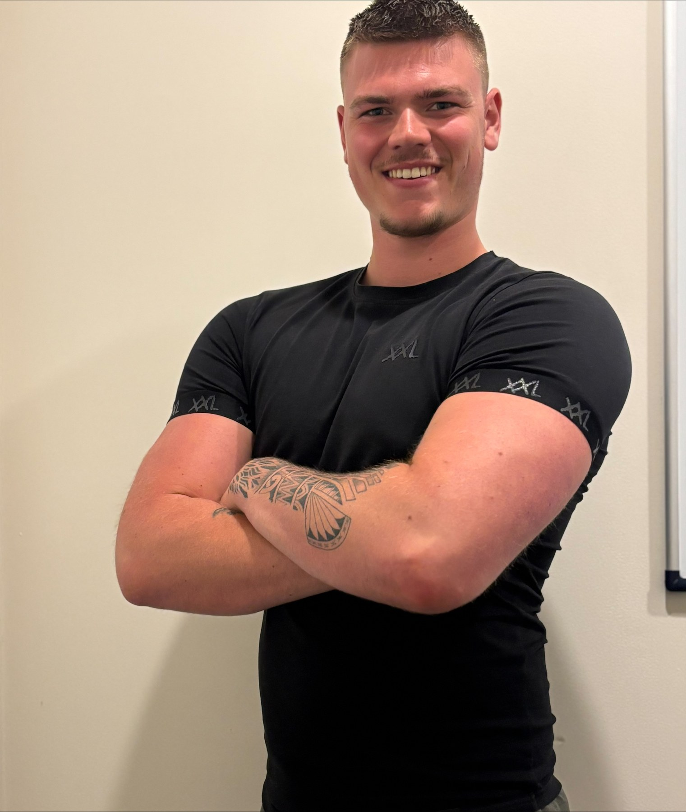

Over mij
Youri Zorge
Oprichter van Fit Met Zorge, fitnesstrainer en coach met een achtergrond in topsport.

Over mij
Youri Zorge
Mijn naam is Youri Zorge, oprichter van Fit met Zorge. Ik coach mensen die niet alleen resultaat willen zien, maar ook willen begrijpen hoe ze sterker, fitter en consistenter worden. Mijn aanpak combineert topsportmentaliteit, techniek, structuur en persoonlijke begeleiding.
Fit met Zorge staat voor trainen met aandacht. Ik geloof niet in snelle oplossingen, losse motivatie of schema's die na twee weken weer verdwijnen. Mijn coaching draait om duidelijkheid: weten wat je doet, waarom je het doet en hoe je het op lange termijn volhoudt.
Mijn expertise komt uit jaren topsport, krachttraining, conditietraining en persoonlijke begeleiding. Als snowboarder werd ik meerdere keren Nederlands kampioen, vertegenwoordigde ik Nederland internationaal en trainde ik jarenlang in Italië om mijn sportieve doelen na te jagen.
Tijdens mijn snowboardcarrière nam ik deel aan verschillende Europa Cup-wedstrijden, behaalde ik een 7e plaats als beste resultaat, werd ik twee keer 6e op het WK voor junioren en eindigde ik als 9e op het EYOF, de Jeugd Olympische Spelen. In die periode werd ik begeleid door olympisch kampioene Nicolien Sauerbreij.
Die achtergrond neem ik mee in mijn coaching. Ik kijk niet alleen naar een oefening of voedingsschema, maar naar het complete plaatje: techniek, belastbaarheid, herstel, gewoontes, planning, motivatie en vertrouwen. Daardoor krijg je begeleiding die professioneel voelt, maar wel praktisch blijft.
Ik beschik over mijn Fitvak A diploma en mijn Conditie/hersteltrainer diploma. Daarnaast zit ik in het examenjaar 2026-2027 van de opleiding Leefstijlcoach. Momenteel werk ik als fitnesstrainer bij Anytime Fitness Hoogerheide, waar ik dagelijks mensen begeleid in training, techniek en leefstijl.
Bij Fit met Zorge krijg je geen standaard aanpak. Je krijgt een plan dat past bij jouw niveau, doelen en leven. Ik help je sterker worden, beter bewegen, fitter voelen en meer grip krijgen op voeding, structuur en herstel.
Mijn doel is dat sporten geen verplichting blijft, maar iets wordt waar je energie, plezier en zelfvertrouwen uit haalt. Je hoeft het niet perfect te doen. Je moet een systeem hebben dat werkt, en iemand naast je hebben die je scherp houdt.
Daarom coach ik met structuur, eerlijkheid en aandacht. Fit met Zorge betekent: hard werken aan jezelf, maar wel met begeleiding die duidelijk, persoonlijk en zonder zorgen voelt.